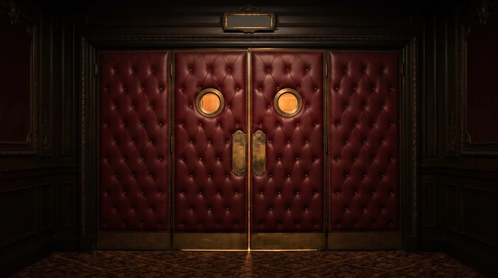
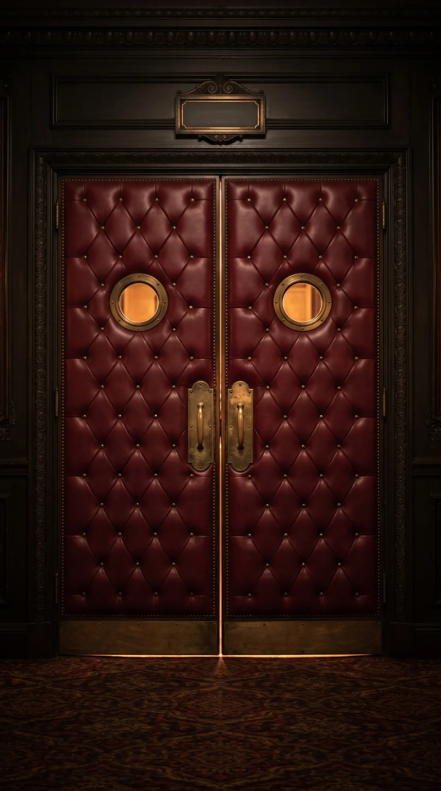

No. 12
Kokkarabo
No. 12 · 2026.07
こっからぼ
国家シミュレーションゲームアプリ
個人で
- Platform
- iPhone
- Cast
- Solo
- Genre
- Simulation


The Shimoda Repertory · Season 2026
iOS App Developer & Student of Intelligent Media Engineering
Director · Programmer · Designer
Issa Shimoda
企画から
ひとりで、
2023
名古屋
HackathonConcept
高校の
ResearchHigh School
2024
第10回マイナビキャリア甲子園に
PlanningContest
2025
ハッカソンにて3人の
HackathonEnsemble · 3
大学の
Web AppSolo
大学の
Team DevEnsemble
大学の
PlanningClass Work
大学の
Web AppClass Work
大学の
Team DevEnsemble
2026
株式会社PR TIMESの
HackathonEnsemble · 4
就職
HackathonEnsemble · 4 · Lead
No. 12
Kokkarabo
No. 12 · 2026.07
国家シミュレーションゲームアプリ
個人で

No. 13
SelfLanding
No. 13 · 2026.08
操縦シミュレーションゲームアプリ
飛行機の

No. 14
StaPa!
No. 14 · 2026.10
球場経営シミュレーションゲームアプリ
小さな

No. 15
Mariedge
No. 15 · 2026.11 予定
ウェディングプランナーゲームアプリ
新郎新婦からの